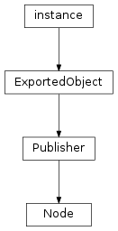

Base Node Classes¶
This section describes the base classes for all node classes that libavg provides.

To be rendered, a Node must be part of a scene graph. Scene graphs are
trees of Node objects associated with a Canvas. A
CanvasNode is at the root of each scene graph. Scene graphs are pure tree
structures, so each Node only has one parent node. Nodes that are not
linked to a canvas are not rendered. Any media that these nodes need are loaded from
disk, however.
libavg Node classes make heavy use of inheritance. Concepts like
id, position and opacity are defined in base classes
and can be used in any of the subclasses.
Note
To reduce redundancy in the reference, inherited methods and attributes are not mentioned in the derived class documentation - follow the link to the base class to access them. This also applies to constructor parameters: When constructing an object of a derived class, constructor parameters of the base classes are also accepted.
There are several ways of constructing a node. The reference documentation follows the python constructor syntax. The parameters remain the same in all syntactic variations, however. The options for construction are as follows:
- Use the standard python constructor:
Nodes can be created using a standard python constructor. As an example:
node = ImageNode(id="background", href="sunset.png", pos=(0,0), parent=rootNode)Parameters to a node constructor are always named parameters. Nodes never have positional constructor parameters.
- Use
Player.createNode():There are two ways to create a node using createNode:
node = player.createNode("image", {"id":"background", "href":"sunset.png", "pos":(0,0), "parent":rootNode})and:
node = player.createNode( """<image id="background" href="sunset.png" pos="(0,0)"/>""")Using the second option, complete trees of nodes can be constructed in one statement.
- Load it from an avg file:
Complete scene graphs for onscreen display can be loaded from disk using
Player.loadFile():root = player.loadFile("scene.avg")- Create a complete scene graph using inline xml:
Player.loadString()allows using an avg-formatted xml string to create a scene graph of nodes:root = player.loadString(""" <avg size="(800,600)"> <image id="background" href="sunset.png" pos="(0,0)"/> </avg> """)The methods
Player.loadFile()andPlayer.loadString()create onscreen scene graphs.Player.loadCanvasFile()andPlayer.loadCanvasString()are the equivalent methods for offscreen canvases.
-
class
libavg.avg.Node([id: string="", parent: DivNode=None, active=True, sensitive=True, opacity=1.0, style=None])¶ Bases:
libavg.avg.PublisherBase class for everything that can be put into an avg tree. This is an abstract class.
Messages:
All cursor and hover messages are emitted only if the cursor is above the
Nodeandactiveas well assensitiveare True. The message parameters are of typeCursorEvent. The CURSOR messages are emitted for mouse and touch events. The HOVER events are emitted for touch devices which can sense hands approaching the surface before the actual touch. TANGIBLE events are emitted when a touch by a physical object is detected and have parameters of classTangibleEvent. Tangibles are usually marker-based and have unique ids.To get these messages, call
Publisher.subscribe().-
CURSOR_DOWN(cursorevent)¶ Emitted whenever a mouse button is pressed or a new touch is registered.
-
CURSOR_MOTION(cursorevent)¶ Emitted whenever a mouse or a touch moves.
-
CURSOR_UP(cursorevent)¶ Emitted whenever a mouse button is released or a touch leaves the surface.
-
MOUSE_WHEEL(mousewheelevent)¶ Emitted whenever a mouse wheel is moved.
-
HOVER_DOWN(cursorevent)¶ Emitted whenever a new hover cursor is registered.
-
HOVER_MOTION(cursorevent)¶ Emitted whenever a hover cursor moves.
-
HOVER_UP(cursorevent)¶ Emitted whenever a hover cursor disappears.
-
TANGIBLE_DOWN(cursorevent)¶ Emitted whenever a tangible is placed on the surface.
-
TANGIBLE_MOTION(cursorevent)¶ Emitted whenever a tangible is moved.
-
TANGIBLE_UP(cursorevent)¶ Emitted whenever a tangible leaves the surface.
-
PEN_DOWN(cursorevent)¶ Emitted whenever a pen is placed on the surface.
-
PEN_MOTION(cursorevent)¶ Emitted whenever a pen is moved.
-
PEN_UP(cursorevent)¶ Emitted whenever a pen leaves the surface.
-
KILLED()¶ Emitted when the node or one of its parents has
unlink(True)called.
-
SIZE_CHANGED(newSize)¶ Emitted whenever the size of the node changes. This includes any python calls that change the size. In addition, image loading (for
ImageNode), opening of video files (forVideoNode) and changes in the text displayed (in the case ofWordsNode) can triggerSIZE_CHANGED()messages. Note that changing the size of a node inside aSIZE_CHANGED()handler will lead to an additional recursive invocation ofSIZE_CHANGED().RectNodeand all classes derived fromAreaNodesupport this message.
-
TANGIBLE_DOWN(tangibleevent) Emitted whenever a new tangible cursor is registered.
-
TANGIBLE_MOTION(tangibleevent) Emitted whenever a tangible cursor moves.
-
TANGIBLE_UP(tangibleevent) Emitted whenever a tangible cursor disappears.
-
TANGIBLE_OVER(tangibleevent) Emitted whenever a tangible cursor enters the
Node‘s area.
-
TANGIBLE_OUT(tangibleevent) Emitted whenever a tangible cursor leaves the
Node‘s area.
-
id¶ A unique identifier that can be used to reference the node, for instance using
Player.getElementByID(). Read-only.
-
parent¶ A
DivNodethat the node will become a child of. When used as a constructor parameter, this is equivalent to callingDivNode.appendChild()directly after construction. Read-only.
-
active¶ If this attribute is true, the node behaves as usual. If not, it is neither drawn nor does it react to events.
-
opacity¶ A measure of the node’s transparency. 0.0 is completely transparent, 1.0 is completely opaque. Opacity is relative to the parent node’s opacity.
-
sensitive¶ A node only reacts to events if sensitive is true.
-
connectEventHandler(type, source, pyobj, pyfunc)¶ Deprecated since version 1.8: Use the message interface instead.
Sets a callback function that is invoked whenever an event of the specified type from the specified source occurs. Unlike
setEventHandler(), this method allows several handlers for one type/source-combination. To remove a handler installed usingconnectEventHandler(), calldisconnectEventHandler().Parameters: - type – One of the event types
KEYUP,KEYDOWN,CURSORMOTION,CURSORUP,CURSORDOWN,CURSOROVERorCURSOROUT. - source –
MOUSEfor mouse events,TOUCHfor multitouch touch events,TRACKfor multitouch track events or other tracking,NONEfor keyboard events. Sources can be or’ed together to set a handler for several sources at once. - pyobj – The python object that hosts the callback. This parameter is only needed
so that
disconnectEventHandler()can be called to remove all handlers hosted by one object in one call. - pyfunc – The python callable to invoke. This callable must take the event to
process as a parameter. In contrast to callbacks set up using
setEventHandler(), it should not return anything. IfconnectEventHandler()is used, all events bubble up the tree. pyfunc may not beNone.
- type – One of the event types
-
disconnectEventHandler(pyobj[, pyfunc])¶ Deprecated since version 1.8: Use the message interface instead.
Removes one or more event handlers from the node’s table of event handlers. If several event handlers conform to the parameters given, all are removed. It is an error if no matching event handler exists.
Parameters: - pyobj – The python object that hosts the event handler.
- pyfunc – The python callable that should not be called anymore. If pyfunc is
absent, all callbacks hosted by
pyobjare removed.
-
getAbsPos(relpos) → Point2D¶ Transforms a position in coordinates relative to the node to a position in window (or canvas, if the node is in an
OffscreenCanvas) coordinates.
-
getElementByPos(pos) → Node¶ Returns the topmost child node that is at the position given.
posis in coordinates relative to the called node. The algorithm used is the same as the cursor hit test algorithm used for events.
-
getParent() → Node¶ Deprecated since version 1.8: Use
parentinstead.Returns the container (
AVGNodeorDivNode) the node is in. For the root node (or if the node is not connected), returnsNone.
-
getRelPos(abspos) → Point2D¶ Transforms a position in absolute coordinates to a position in coordinates relative to the node. More precisely, absolute coordinates are in canvas coordinates. Thus, for nodes in the main canvas,
absposis a window coordinate.
-
registerInstance(self, parent)¶ Needs to be called when deriving from a Node class in python in the derived classes
__init__()method (and only there, see Programmer’s Guide).
-
releaseEventCapture([cursorid])¶ Restores normal cursor event handling after a call to
setEventCapture().cursoridis the id of the cursor to release. Ifcursoridis not given, the mouse cursor is used.
-
setEventCapture([cursorid])¶ Sets up event capturing so that cursor events are sent to this node regardless of the cursor position. cursorid is optional; if left out, the mouse cursor is captured. If not, events from a specific tracker cursor are captured. The event propagates to the capturing node’s parent normally. This function is useful for the implementation of user interface elements such as scroll bars. Only one node can capture a cursor at any one time. Normal operation can be restored by calling
releaseEventCapture().
-
setEventHandler(type, source, pyfunc)¶ Deprecated since version 1.7: Use the message interface instead.
Sets a callback function that is invoked whenever an event of the specified type from the specified source occurs. This method removes all other event handlers from this type/source-combination.
Parameters: - type – One of the event types
KEYUP,KEYDOWN,CURSORMOTION,CURSORUP,CURSORDOWN,CURSOROVERorCURSOROUT. - source –
MOUSEfor mouse events,TOUCHfor multitouch touch events,TRACKfor multitouch track events or other tracking,NONEfor keyboard events. Sources can be or’ed together to set a handler for several sources at once. - pyfunc –
The python callable to invoke. This callable must take the event to process as a parameter. If pyfunc returns
NoneorFalse, the event bubbles up the node tree. If it isTrue, bubbling is suppressed.If pyfunc is
None, the previous handler is removed.
- type – One of the event types
-
unlink([kill=False])¶ Removes a node from its parent container and optionally deletes all resources the node holds. In the default case,
unlink()is equivalent tonode.getParent().removeChild(node.getParent().indexOf(node)), except that if the node has no parent, unlink does nothing. Also in the default case, textures are moved back to the CPU and event handlers are preserved.If
kill=True, textures are not moved back. Event handlers for events routed to this node are reset, gesture recognizers disabled, all textures are deleted and the href is reset to empty in this case, saving some time and making sure there are no references to the node left on the libavg side.killshould always be set toTrueif the node will not be used after the unlink.
-
-
class
libavg.avg.Publisher¶ Bases:
libavg.avg.ExportedObjectlibavg supports event handling and callbacks through a publish/subscribe interface.
Publisheris the base class for all classes that send messages. Derived classes can send messages of arbitrary types. The base class takes care of managing a list of subscribers for each message type and sending the message to each subscriber.Many libavg classes, including
Node,Player,Contactand theRecognizerclasses derive from publisher. In addition, it is possible to derive fromPublisherin client code by calling the methods in the protected interface.-
subscribe(messageID, callable) → int¶ Registers a subscriber for the given
messageID. Thecallablefor all subscribers is invoked whenever the publisher sends out the message with this ID.subscribe()returns asubscriberIDthat can be used to unsubscribe if this becomes necessary. The subscription is also terminated if either the publisher or the subscriber is deleted. ThePublisherclass works with weak references to subscribers when possible, so this should happen automatically in most cases. The exception is whencallableis an anonymous function (a lambda expression). In this case, thePublisherneeds to hold a reference to the callable to keep it from being deleted immediately andunsubscribe()needs to be called manually.If the
callableparameter isNone, the call is ignored and -1 is returned.
-
unsubscribe(messageID, subscriberID)¶ -
unsubscribe(messageID, callable) Removes a subscriber from the list of subscribers for
messageID. The subscriber is either determined by thesubscriberIDreturned fromsubscribe()or by thecallableattached to the subscription.
Protected Interface:
To be called from derived classes.
-
publish(messageID)¶ Registers a
messageIDso that interested parties can subscribe to this message.
-
notifySubscribers(messageID, argsList)¶ Invokes all callables registered for this
messageIDusing the list of args passed. Subscribers are called synchronously; the order of invokation is undefined.
-